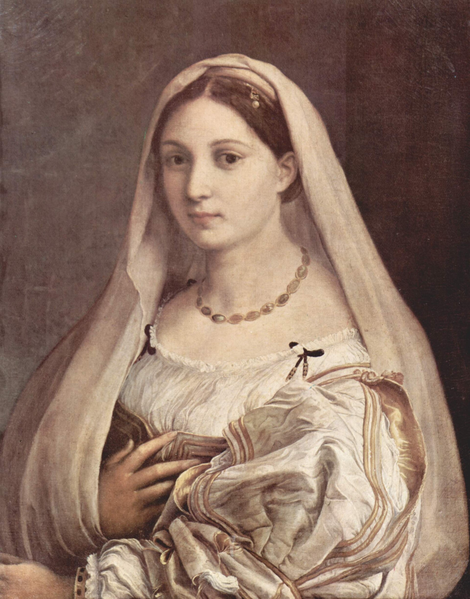
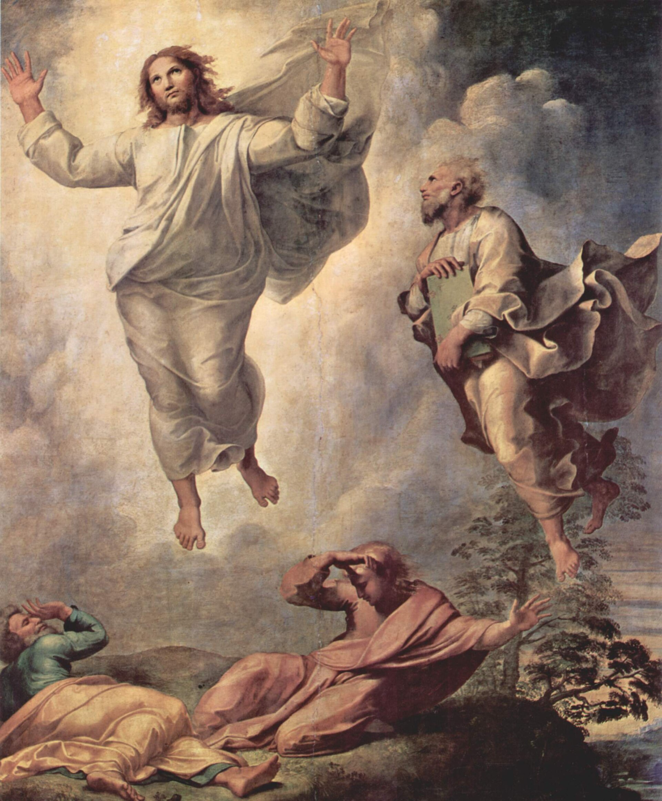
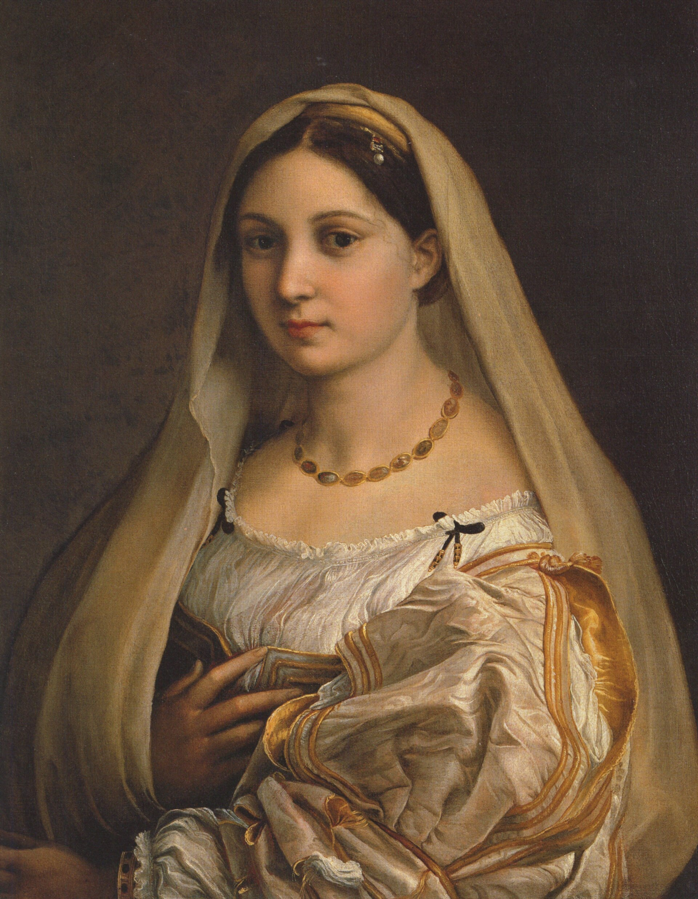
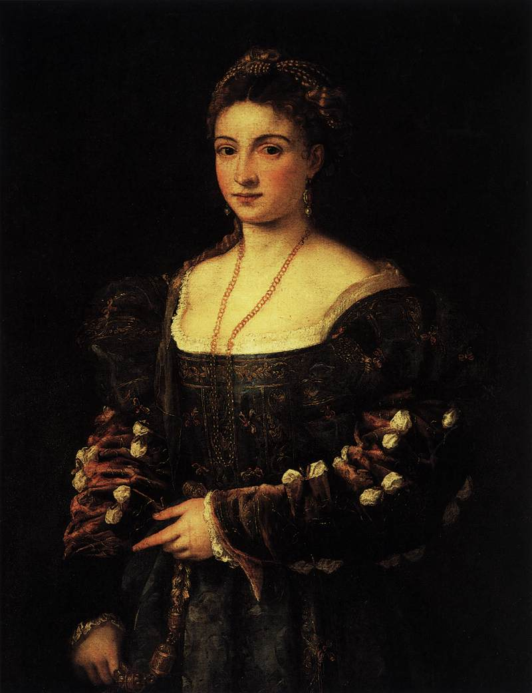
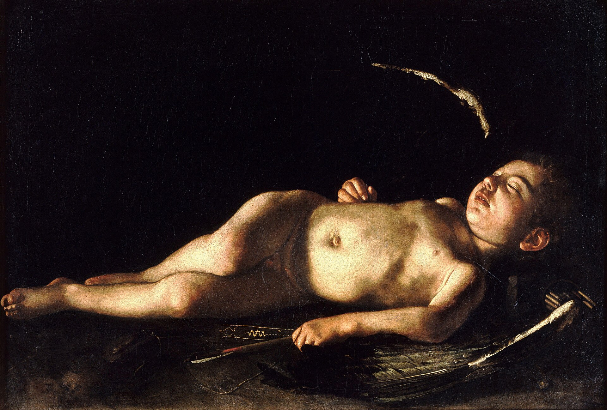
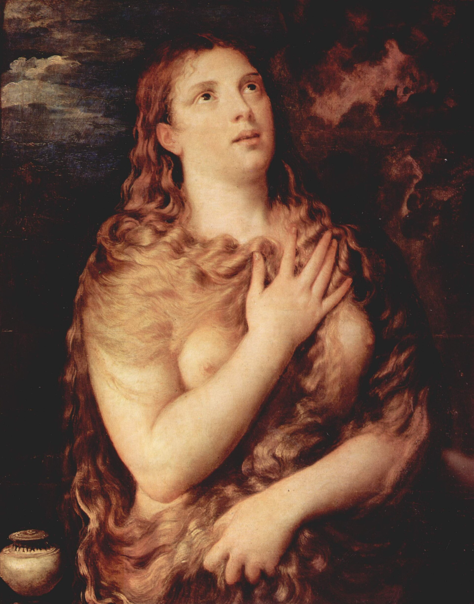
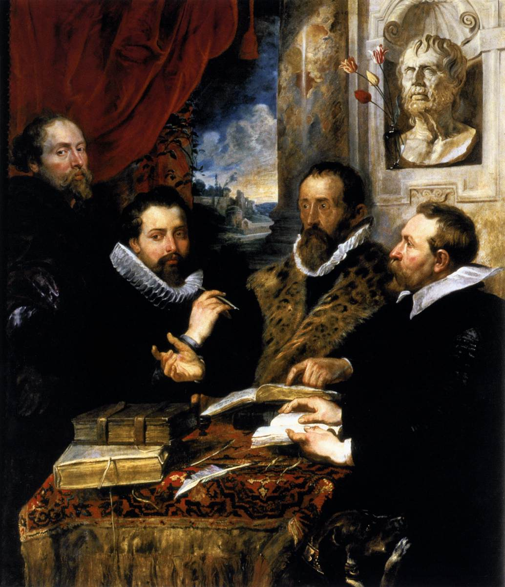
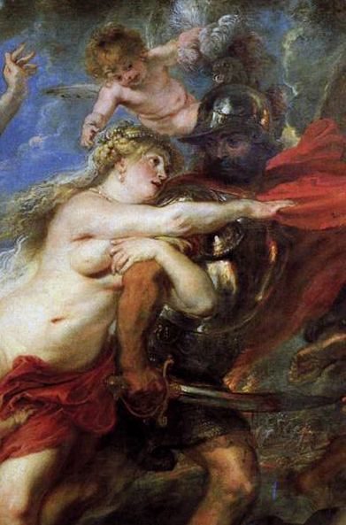
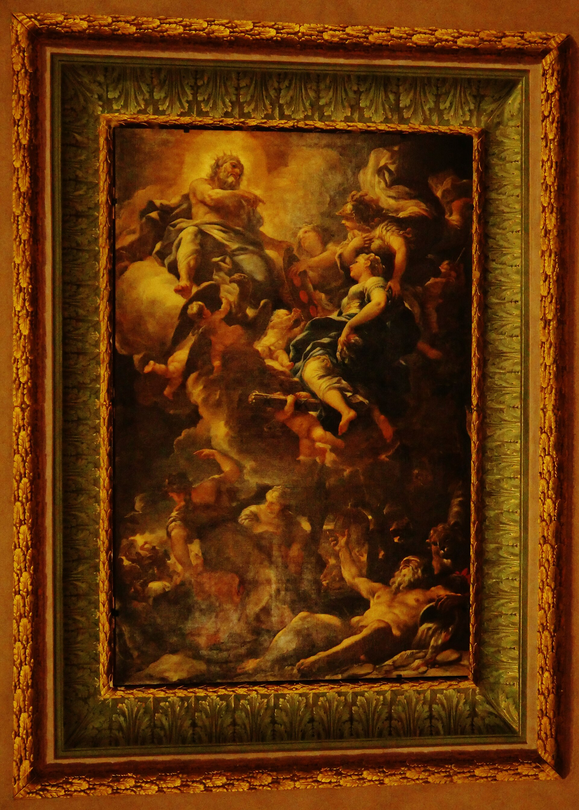

1458 年银行家卢卡·碧提为自己建的巨宅（后来他破产了），1549 年被美第奇家族买下成为大公主居，此后 300 年是托斯卡纳权力中心。今天的帕拉蒂纳美术馆保持着 17 世纪“挂到天花板”的密集陈列法--拉斐尔、提香、卡拉瓦乔、鲁本斯挤在一起，像一场永不停幕的皇家晚宴。
看点路线
Il Percorso
- 1二层帕拉蒂纳美术馆：拉斐尔《椅中圣母》《大公圣母》、提香《英国人肖像》
- 2卡拉瓦乔《沉睡的爱神》、鲁本斯厅（四幅巨作）
- 3皇家公寓：19 世纪萨伏依王朝的内饰
- 4出宫直接进波波里花园（联票含）
馆藏名作
Galleria Palatina
绘画Pittura · 11 件

《椅中圣母》
圆形构图的巅峰：圣母环抱圣婴坐在椅中，目光温柔得像母性本身。传说拉斐尔在乡间酒馆看到抱孩子的农妇，随手在酒桶底板上起稿。

《大公圣母》
朴素立姿的圣母与小圣婴，背景空无一物。它被称为“完美得没有故事”的圣母--托斯卡纳大公走到哪带到哪，名字由此而来。

《戴面纱的女人》
传说是拉斐尔的恋人福纳琳娜：袖口的金链刻着画家的名字缩写。面纱下的肩膀，是文艺复兴对“温柔”的一次精确测量。

《La Bella》
蓝裙贵族女子的半身像，眼神慵懒而笃定。乌尔比诺公爵订单里的“那位穿蓝裙的女人”--提香把“美”画成了一句陈述句。
《英国人肖像》
灰蓝眼睛的年轻贵族侧身回眸，毛皮与丝绸被画出了“手感”。画的是谁至今成谜，但那道目光五百年没离开过观众。

《沉睡的爱神》
翅膀耷拉的小爱神沉睡在黑色虚空里--把神话画成午后慵懒的少年。教会版的“禁欲警告”被他画成了诱惑本身。

《忏悔的玛格达琳》
金发散落、仰望天空的玛格达琳--提香把“忏悔”画成了感官与救赎的拉锯。同一题材他画了好几个版本，这一件最克制。

《四哲人》
鲁本斯与三位好友（含他的哥哥）的哲学家群像--背景 bust 是塞涅卡。好友早逝后他补画入自己：一幅友谊的纪念碑。

《战争的后果》
战神马尔斯被复仇女神拖向战场，欧洲的哀哭妇人被践踏。鲁本斯晚年反战寓言--三十年战争时代的欧洲，看懂了每一笔。
现代美术馆（macchiaioli）
碧提宫三层是意大利自己的“印象派”--macchiaioli 画派的托斯卡纳阳光与斑点笔触。在满墙提香与鲁本斯之后，这里是清口的柠檬雪葩。

皇家公寓与萨伏依收藏
宫殿右侧的皇家起居室：从“佛罗伦萨当首都”的六年到意大利王国，一间间沙龙冻结了王朝最后的体面。
历史故事
Le Storie
壹银行家的豪宅，公爵夫人的 bargain
1458 年，银行家卢卡·碧提为跟美第奇家斗富，买下山坡建巨宅--他放话要把旧宫整个装进自家中庭。结果 1494 年美第奇被驱逐引发的金融动荡里，碧提家破产，豪宅烂尾。
1549 年，科西莫一世的妻子埃莱奥诺拉·迪·托莱多把它买下。这位那不勒斯总督的女儿看中的是背后的山坡：她要在那里建一座私人花园（波波里）。
此后美第奇把主居从旧宫迁来，托斯卡纳大公国的权力中心跨过阿诺河。一座房子先后住过银行家、大公和国王，全城仅此一份。
贰拉斐尔的圣母们为何都在这
帕拉蒂纳收藏拉斐尔圣母题材的密度全球第一：《椅中圣母》《大公圣母》《戴面纱的女子》同层陈列。这些画大多是美第奇大公费迪南多一世起的系统收购--把“文艺复兴优雅”当成大公国的官方美学。
《椅中圣母》还有一段二战传奇：1944 年德军撤退时，它与《春》等名作被运往北意的城堡藏匿，战后盟军“古迹卫士”小队把它们逐一追回--电影《盟军夺宝队》的原型故事里，帕拉蒂纳是主角之一。
今天它挂在面向窗户的展墙上：阳光好的下午，圣母衣袍的红色像刚画完一样。
叁“挂到天花板”的皇家沙龙
帕拉蒂纳美术馆刻意保留了皇家收藏的“沙拉式挂法”：一墙七八幅、金框挨金框、天花板也排满。与现代美术馆的留白美学相反，这是“喂眼睛”的巴洛克逻辑。
19 世纪前，看画的姿势是“检阅”而非“凝视”：贵族访客沿着墙走一圈，像巡视自己的资产。今天的观众站定细看一幅，反而是新习惯。
在金星厅（Sala di Venere）试一次“老式看法”：沿墙快走一圈再回头挑一幅细看--你会突然理解这种挂法的快感。
肆《戴面纱的女人》与画家的爱人
传说画中人是拉斐尔的恋人、面包师之女“福纳琳娜”；她袖口的金链上刻着画家的名字缩写--拉斐尔把签名藏进了爱情信物。
拉斐尔 1520 年去世时两人未婚。瓦萨里说，画家至死惦记着她；后世不断把各种美人像都认作“福纳琳娜”，包括罗马那幅裸体的--她成了文艺复兴最著名的“匿名缪斯”。
看她袖子上的褶皱：那是全画最贵的十厘米--据说拉斐尔重画了多遍，只为让丝绸“呼吸”。
伍埃莱奥诺拉的“学区房”
埃莱奥诺拉买下碧提宫的另一个原因：给孩子们找一处远离旧宫政治噪音的家。她的私人小堂（Sala di Eleonora）由布龙齐诺绘制全套壁画--托斯卡纳公爵夫人的“闺房艺术”标本。
布龙齐诺是矫饰主义肖像大师，他为埃莱奥诺拉画的肖像（藏乌菲兹）里，公爵夫人抱着小儿子--官方肖像里罕见的母子构图。
她的房间连着秘密通道下楼直通波波里花园--权力女性给自己修的“逃生梯”，通向花园而非城墙。
陆拿破仑来过，维纳斯没走
1799-1814 年法国占领期间，碧提宫被用作军事指挥所，部分藏品打包运法--但 1815 年维也纳会议后，托斯卡纳要回了绝大部分（包括提香的《La Bella》）。
这与米兰布雷拉的命运形成对照：北意的“征收”没还，托斯卡纳的“征用”还了--归还史的分水岭，写在这座宫殿的墙上。
《La Bella》的画框至今留着两枚徽章：一枚托斯卡纳、一枚（被刮掉的）法国--修复师故意留下这道疤。
柒萨伏依王朝的“最后一场舞”
1865-1871 年佛罗伦萨当意大利首都，碧提宫成为王宫；1871 年迁都罗马后，它仍是萨伏依王朝的行宫，直至 1946 年意大利公投废除君主制。
末代国王翁贝托二世的女儿玛丽亚·加布里埃拉至今回忆：1946 年 6 月公投之夜，全家在宫中等票--次日凌晨，“国王”变成了“公民”。
皇家公寓的舞厅保持着最后一场宫廷舞的原状：水晶灯、镜墙与乐池--一个王朝的谢幕布景，被时间按了暂停。
捌银器馆与美第奇的“硬通货”
一层的银器博物馆（Museo degli Argenti）陈列美第奇历代大公的金银器、象牙与硬石花瓶--其中的“萨尔维亚蒂硬石瓶”是罗马时代传下来的珍品，文艺复兴时被配上金银底座。
这批收藏的另一重身份是“国库”：危机时可以熔了换军费。硬石与象牙做的花瓶因此反而最“保值”--艺术比货币活得久。
看那些巴洛克金银帆船（桌上摆件）：它们既是餐具也是战备物资，餐桌上的权力计算。
玖服饰馆：从埃莱奥诺拉到瓦伦蒂诺
碧提宫的服饰馆（Galleria del Costume）是意大利第一家时尚博物馆：从美第奇大公的殓衣（出土于他们的墓）、埃莱奥诺拉的裙撑，到 20 世纪的瓦伦蒂诺与卡沃利。
镇店之宝之一是埃莱奥诺拉的“鲸骨裙”残件--考古织物学还原出 16 世纪宫廷女性的真实尺寸：她并不瘦。
意大利时尚的族谱在这里接得整整齐齐：从大公的织金锦到米兰的时装周，一根线没断。
拾“三联票”的最优用法
乌菲兹 + 碧提 + 波波里 €38 联票 72 小时有效，用法讲究：乌菲兹一个上午、碧提一个下午、波波里接黄昏（花园关门前 1 小时停止入场）。
动线别贪多：帕拉蒂纳（绘画）-> 皇家公寓 -> 出宫进花园上山 Belvedere--把“登高”一并完成，比单独去米开朗基罗广场更省腿。
注意三馆都周一闭（波波里周二部分维护）--把联票日放在周二至周日的任意三天。
参观贴士
Consigli Pratici
- 联票（Uffizi + Pitti + Boboli €38 / 72h）最划算，三处可分三天用
- 参观动线：二层帕拉蒂纳 -> 皇家公寓 -> 一层银器/服饰馆（体力有限优先前两者）
- 出宫后花园后山（波波里 Belvedere 要塞）看全景，把“登高”一并完成
- 老桥两侧的金店橱窗顺路看，别买（同款老桥品牌店便宜三成）
- 周一闭馆（与乌菲兹同日，行程错开）
顺路同游
Da Non Perdere